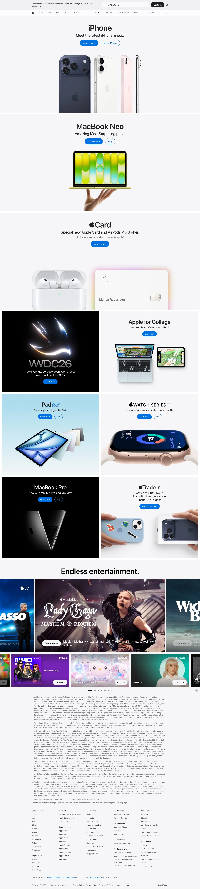

Apple 主题
Apple 的 Design.md 主题展示，围绕消费品牌、媒体内容、高级质感、电商零售组织页面。
Consumer electronics. Premium white space, SF Pro, cinematic imagery.
消费品牌媒体内容高级质感电商零售品牌展示移动端内容货架趣味互动

来源
- 来源
- getdesign.md
- 镜像
- github:VoltAgent/awesome-design-md
- 网站
- https://apple.com/
- 详情
- https://getdesign.md/apple/design-md
色板
#0066cc: #0066cc#0071e3: #0071e3#1d1d1f: #1d1d1f#2997ff: #2997ff#ffffff: #ffffff#cccccc: #cccccc#333333: #333333#7a7a7a: #7a7a7a#f0f0f0: #f0f0f0#e0e0e0: #e0e0e0#f5f5f7: #f5f5f7#fafafc: #fafafc
字体
display: SF Pro Displaybody: SF Pro Textmono: ui-monospacehints: SF Pro Display,SF Pro Text,ui-monospace,SF Pro,Inter
圆角
control: 9999pxcard: 18pxpreview: 0pxpill: 9999pxsource: design-md
间距
xxs: 4pxxs: 8pxsm: 12pxmd: 17pxlg: 24pxxl: 32pxxxl: 48pxsection: 80pxsource: design-md
使用建议
建议
- 建议：Use {colors.primary} (Action Blue #0066cc) for every interactive element — links, pill CTAs, focus signals — and nothing else. The single accent is non-negotiable。
- 建议：Set headlines in {typography.hero-display} or {typography.display-lg} with negative letter-spacing ({-0.28 → -0.374px}) to get the signature "Apple tight" cadence。
- 建议：Run body copy at {typography.body} (17px / 400 / 1.47 / -0.374px) — not 16px. The extra pixel defines the brand's reading pace。
- 建议：Alternate {component.product-tile-light} (or parchment) and {component.product-tile-dark} for full-bleed section rhythm. The color change IS the divider。
- 建议：Reserve {rounded.pill} for the primary blue CTA and any other element that should read as an "action" (configurator chips, search input, sticky bar CTA)。
避免
- 避免：introduce a second accent color; every "click me" signal is {colors.primary} (Action Blue)。
- 避免：add shadows to cards, buttons, or text — shadow is reserved for product imagery。
- 避免：use gradients as decorative backgrounds; atmosphere comes from photography。
- 避免：set body copy at weight 500 — Apple's ladder is 300 / 400 / 600 / 700, with 500 deliberately absent. Body is always 400; strong inline is 600; display is 600。
- 避免：round full-bleed tiles — tiles are rectangular and edge-to-edge; the color change is the divider。
查看 DESIGN.md